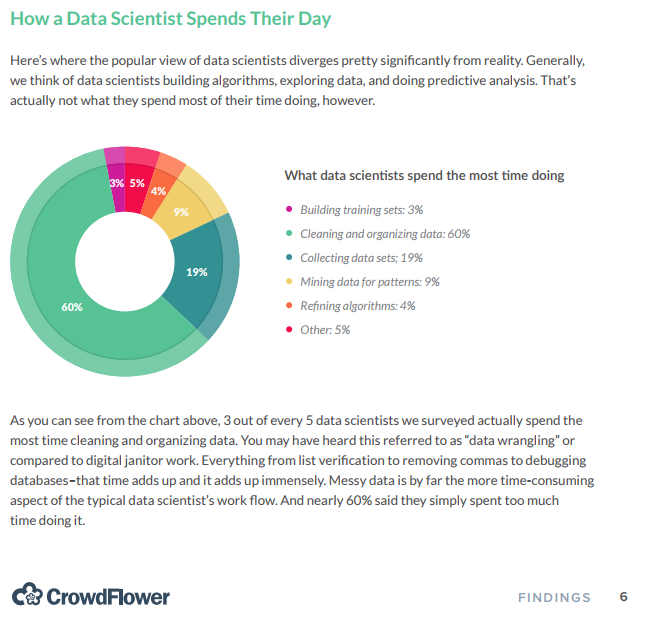
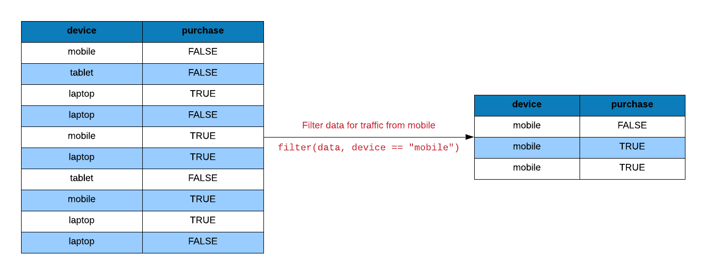
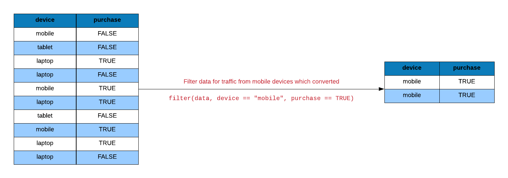
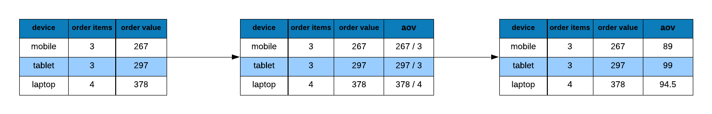
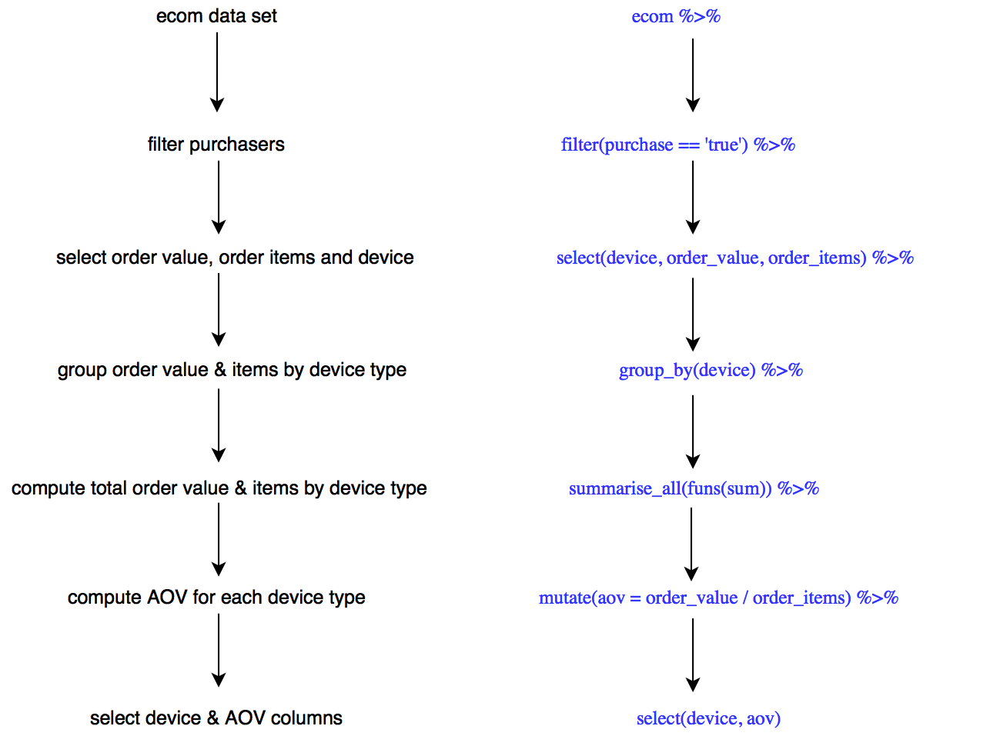

Chapter 3 dplyr Basics
3.1 Introduction
According to a survey by CrowdFlower, data scientists spend most of their time cleaning and manipulating data rather than mining or modeling them for insights. As such, it becomes important to have tools that make data manipulation faster and easier. In today’s chapter, we introduce you to dplyr, a grammar of data manipulation.

We will use the following R packages:
library(dplyr)
library(readr)3.2 dplyr Verbs
dplyr provides a set of verbs that help us solve the most common data manipulation challenges while working with tabular data (dataframes, tibbles):
selectfilterarrangemutatesummarise
3.3 Data
ecom <-
read_csv('https://raw.githubusercontent.com/rsquaredacademy/datasets/master/web.csv',
col_types = cols_only(device = col_factor(levels = c("laptop", "tablet", "mobile")),
referrer = col_factor(levels = c("bing", "direct", "social", "yahoo", "google")),
purchase = col_logical(), n_pages = col_double(), n_visit = col_double(),
duration = col_double(), order_value = col_double(), order_items = col_double()
)
)
ecom## # A tibble: 1,000 x 8
## referrer device n_visit n_pages duration purchase order_items order_value
## <fct> <fct> <dbl> <dbl> <dbl> <lgl> <dbl> <dbl>
## 1 google laptop 10 1 693 FALSE 0 0
## 2 yahoo tablet 9 1 459 FALSE 0 0
## 3 direct laptop 0 1 996 FALSE 0 0
## 4 bing tablet 3 18 468 TRUE 6 434
## 5 yahoo mobile 9 1 955 FALSE 0 0
## 6 yahoo laptop 5 5 135 FALSE 0 0
## 7 yahoo mobile 10 1 75 FALSE 0 0
## 8 direct mobile 10 1 908 FALSE 0 0
## 9 bing mobile 3 19 209 FALSE 0 0
## 10 google mobile 6 1 208 FALSE 0 0
## # ... with 990 more rows3.3.1 Data Dictionary
Below is the description of the data set:
- referrer: referrer website/search engine
- device: device used to visit the website
- n_pages: number of pages visited
- duration: time spent on the website (in seconds)
- purchase: whether visitor purchased
- order_value: order value of visitor (in dollars)
- n_visit: number of visits
3.4 Case Study
We will use dplyr to answer the following:
- what is the average order value by device types?
- what is the average number of pages visited by purchasers and non-purchasers?
- what is the average time on site for purchasers vs non-purchasers?
- what is the average number of pages visited by purchasers and non-purchasers using mobile?
3.5 Average Order Value

3.6 AOV by Devices
ecom %>%
filter(purchase) %>%
select(device, order_value) %>%
group_by(device) %>%
summarise_all(funs(revenue = sum, orders = n())) %>%
mutate(
aov = revenue / orders
) %>%
select(device, aov) %>%
arrange(aov)## Warning: `funs()` was deprecated in dplyr 0.8.0.
## Please use a list of either functions or lambdas:
##
## # Simple named list:
## list(mean = mean, median = median)
##
## # Auto named with `tibble::lst()`:
## tibble::lst(mean, median)
##
## # Using lambdas
## list(~ mean(., trim = .2), ~ median(., na.rm = TRUE))## # A tibble: 3 x 2
## device aov
## <fct> <dbl>
## 1 tablet 1426.
## 2 mobile 1431.
## 3 laptop 1824.3.7 Syntax
Before we start exploring the dplyr verbs, let us look at their syntax:
- the first argument is always a
data.frameortibble - the subsequent arguments provide the information required for the verbs to take action
- the name of columns in the data need not be surrounded by quotes
3.8 Filter Rows
In order to compute the AOV, we must first separate the purchasers from
non-purchasers. We will do this by filtering the data related to purchasers
using the filter() function. It allows us to filter rows that meet a specific
criteria/condition. The first argument is the name of the data frame and the
rest of the arguments are expressions for filtering the data. Let us look at a
few examples:
The first example we will look at filters all visits from device mobile. As
we had learnt in the previous section, the first argument is our data set ecom
and the next argument is the condition for filtering rows.

filter(ecom, device == "mobile")## # A tibble: 344 x 8
## referrer device n_visit n_pages duration purchase order_items order_value
## <fct> <fct> <dbl> <dbl> <dbl> <lgl> <dbl> <dbl>
## 1 yahoo mobile 9 1 955 FALSE 0 0
## 2 yahoo mobile 10 1 75 FALSE 0 0
## 3 direct mobile 10 1 908 FALSE 0 0
## 4 bing mobile 3 19 209 FALSE 0 0
## 5 google mobile 6 1 208 FALSE 0 0
## 6 direct mobile 9 14 406 TRUE 3 651
## 7 yahoo mobile 7 1 19 FALSE 7 2423
## 8 google mobile 5 1 147 FALSE 0 0
## 9 bing mobile 0 7 196 FALSE 4 237
## 10 google mobile 10 1 338 FALSE 0 0
## # ... with 334 more rowsWe can specify multiple filtering conditions as well. In the below example, we specify two filter conditions:
- visit from device mobile
- resulted in a purchase or conversion

filter(ecom, device == "mobile", purchase)## # A tibble: 36 x 8
## referrer device n_visit n_pages duration purchase order_items order_value
## <fct> <fct> <dbl> <dbl> <dbl> <lgl> <dbl> <dbl>
## 1 direct mobile 9 14 406 TRUE 3 651
## 2 bing mobile 4 20 440 TRUE 3 184
## 3 bing mobile 3 18 288 TRUE 6 764
## 4 social mobile 10 11 242 TRUE 4 287
## 5 yahoo mobile 6 14 322 TRUE 3 1443
## 6 google mobile 1 18 252 TRUE 3 2449
## 7 social mobile 7 16 352 TRUE 10 2824
## 8 direct mobile 4 18 324 TRUE 3 1670
## 9 social mobile 1 20 520 TRUE 5 1021
## 10 yahoo mobile 0 13 351 TRUE 10 288
## # ... with 26 more rowsHere is another example where we specify multiple conditions:
- visit from device tablet
- made a purchase
- browsed less than 15 pages
filter(ecom, device == "tablet", purchase, n_pages < 15)## # A tibble: 12 x 8
## referrer device n_visit n_pages duration purchase order_items order_value
## <fct> <fct> <dbl> <dbl> <dbl> <lgl> <dbl> <dbl>
## 1 social tablet 7 10 290 TRUE 9 1304
## 2 yahoo tablet 2 14 364 TRUE 6 1667
## 3 google tablet 7 12 324 TRUE 2 1358
## 4 direct tablet 3 12 324 TRUE 10 1257
## 5 yahoo tablet 0 13 390 TRUE 5 1748
## 6 social tablet 2 12 300 TRUE 2 2754
## 7 direct tablet 6 13 338 TRUE 5 683
## 8 yahoo tablet 2 10 280 TRUE 4 293
## 9 social tablet 10 10 290 TRUE 9 37
## 10 direct tablet 3 10 260 TRUE 7 980
## 11 google tablet 9 14 308 TRUE 7 2436
## 12 social tablet 10 11 330 TRUE 1 21713.8.1 Case Study
Let us apply what we have learnt to the case study. We want to filter all visits that resulted in a purchase.
filter(ecom, purchase)## # A tibble: 103 x 8
## referrer device n_visit n_pages duration purchase order_items order_value
## <fct> <fct> <dbl> <dbl> <dbl> <lgl> <dbl> <dbl>
## 1 bing tablet 3 18 468 TRUE 6 434
## 2 direct mobile 9 14 406 TRUE 3 651
## 3 bing tablet 5 16 368 TRUE 6 1049
## 4 social tablet 7 10 290 TRUE 9 1304
## 5 direct tablet 2 19 342 TRUE 5 622
## 6 social tablet 9 20 420 TRUE 7 1613
## 7 bing mobile 4 20 440 TRUE 3 184
## 8 yahoo tablet 2 16 480 TRUE 9 286
## 9 bing mobile 3 18 288 TRUE 6 764
## 10 yahoo tablet 2 14 364 TRUE 6 1667
## # ... with 93 more rows3.9 Select Columns
After filtering the data, we need to select relevent variables to compute the
AOV. Remember, we do not need all the columns in the data to compute a required
metric (in our case, AOV). The select() function allows us to select a subset
of columns. The first argument is the name of the data frame and the subsequent
arguments specify the columns by name or position.
To select the device and duration columns, we specify the data set i.e.
ecom followed by the name of the columns.

select(ecom, device, duration)## # A tibble: 1,000 x 2
## device duration
## <fct> <dbl>
## 1 laptop 693
## 2 tablet 459
## 3 laptop 996
## 4 tablet 468
## 5 mobile 955
## 6 laptop 135
## 7 mobile 75
## 8 mobile 908
## 9 mobile 209
## 10 mobile 208
## # ... with 990 more rowsWe can select a set of columns using :. In the below example, we select all
the columns starting from referrer up to order_items. Remember that we can use : only when
the columns are adjacent to each other in the data set.

select(ecom, referrer:order_items)## # A tibble: 1,000 x 7
## referrer device n_visit n_pages duration purchase order_items
## <fct> <fct> <dbl> <dbl> <dbl> <lgl> <dbl>
## 1 google laptop 10 1 693 FALSE 0
## 2 yahoo tablet 9 1 459 FALSE 0
## 3 direct laptop 0 1 996 FALSE 0
## 4 bing tablet 3 18 468 TRUE 6
## 5 yahoo mobile 9 1 955 FALSE 0
## 6 yahoo laptop 5 5 135 FALSE 0
## 7 yahoo mobile 10 1 75 FALSE 0
## 8 direct mobile 10 1 908 FALSE 0
## 9 bing mobile 3 19 209 FALSE 0
## 10 google mobile 6 1 208 FALSE 0
## # ... with 990 more rowsWhat if you want to select all columns except a few? Typing the name of many
columns can be cumbersome and may also result in spelling errors. We may use :
only if the columns are adjacent to each other but that may not always be
the case. dplyr allows us to specify columns that need not be
selected using -. In the below example, we select all columns except n_pages and
duration. Notice the - before both of them.

select(ecom, -n_pages, -duration)## # A tibble: 1,000 x 6
## referrer device n_visit purchase order_items order_value
## <fct> <fct> <dbl> <lgl> <dbl> <dbl>
## 1 google laptop 10 FALSE 0 0
## 2 yahoo tablet 9 FALSE 0 0
## 3 direct laptop 0 FALSE 0 0
## 4 bing tablet 3 TRUE 6 434
## 5 yahoo mobile 9 FALSE 0 0
## 6 yahoo laptop 5 FALSE 0 0
## 7 yahoo mobile 10 FALSE 0 0
## 8 direct mobile 10 FALSE 0 0
## 9 bing mobile 3 FALSE 0 0
## 10 google mobile 6 FALSE 0 0
## # ... with 990 more rows3.9.1 Case Study
For our case study, we need to select the column order_value
to calculate the AOV. We also need to select the device column as we are
computing the AOV for each device type.
select(ecom, device, order_value)## # A tibble: 1,000 x 2
## device order_value
## <fct> <dbl>
## 1 laptop 0
## 2 tablet 0
## 3 laptop 0
## 4 tablet 434
## 5 mobile 0
## 6 laptop 0
## 7 mobile 0
## 8 mobile 0
## 9 mobile 0
## 10 mobile 0
## # ... with 990 more rowsBut we want the above data only for purchasers. Let us combine filter() and
select() functions to extract order_value and order_items only for those
visis that resulted in a purchase.
# filter all visits that resulted in a purchase
ecom1 <- filter(ecom, purchase)
# select the relevant columns
ecom2 <- select(ecom1, device, order_value)
# view data
ecom2## # A tibble: 103 x 2
## device order_value
## <fct> <dbl>
## 1 tablet 434
## 2 mobile 651
## 3 tablet 1049
## 4 tablet 1304
## 5 tablet 622
## 6 tablet 1613
## 7 mobile 184
## 8 tablet 286
## 9 mobile 764
## 10 tablet 1667
## # ... with 93 more rows3.10 Grouping Data
We need to compute the total order value and total order items for each device
in order to compute their AOV. To achieve this, we need to group the selected
order_value and order_items by device type. group_by() allows us to group
or split data based on particular (discrete) variable. The first argument is the
name of the data set and the second argument is the name of the column based on
which the data will be split.
To split the data by referrer type, we use group_by and specify the data set
i.e. ecom and the column based on which to split the data i.e. referrer.
group_by(ecom, referrer)## # A tibble: 1,000 x 8
## # Groups: referrer [5]
## referrer device n_visit n_pages duration purchase order_items order_value
## <fct> <fct> <dbl> <dbl> <dbl> <lgl> <dbl> <dbl>
## 1 google laptop 10 1 693 FALSE 0 0
## 2 yahoo tablet 9 1 459 FALSE 0 0
## 3 direct laptop 0 1 996 FALSE 0 0
## 4 bing tablet 3 18 468 TRUE 6 434
## 5 yahoo mobile 9 1 955 FALSE 0 0
## 6 yahoo laptop 5 5 135 FALSE 0 0
## 7 yahoo mobile 10 1 75 FALSE 0 0
## 8 direct mobile 10 1 908 FALSE 0 0
## 9 bing mobile 3 19 209 FALSE 0 0
## 10 google mobile 6 1 208 FALSE 0 0
## # ... with 990 more rows3.10.1 Case Study
In the second line in the previous output, you can observe Groups: referrer [5]
. The data is split into 5 groups as the referrer variable has 5 distinct values.
For our case study, we need to group the data by device type.
# split ecom2 by device type
ecom3 <- group_by(ecom2, device)
ecom3## # A tibble: 103 x 2
## # Groups: device [3]
## device order_value
## <fct> <dbl>
## 1 tablet 434
## 2 mobile 651
## 3 tablet 1049
## 4 tablet 1304
## 5 tablet 622
## 6 tablet 1613
## 7 mobile 184
## 8 tablet 286
## 9 mobile 764
## 10 tablet 1667
## # ... with 93 more rows3.11 Summarise Data
The next step is to compute the total order value and total order items for each
device. i.e. we need to reduce the order value and order items data to a single
summary. We can achieve this using summarise(). As usual, the first argument
is the name of a data set and the subsequent arguments are functions that can
summarise data. For example, we can use min, max, sum, mean etc.
Let us compute the average number of pages browsed by referrer type:
- split data by
referrertype - compute the average number of pages using
mean

# split data by referrer type
step_1 <- group_by(ecom, referrer)
# compute average number of pages
step_2 <- summarise(step_1, mean(n_pages))## `summarise()` ungrouping output (override with `.groups` argument)step_2## # A tibble: 5 x 2
## referrer `mean(n_pages)`
## <fct> <dbl>
## 1 bing 6.13
## 2 direct 6.38
## 3 social 5.42
## 4 yahoo 5.99
## 5 google 5.73Now let us compute both the mean and the median.
# split data by referrer type
step_1 <- group_by(ecom, referrer)
# compute average number of pages
step_2 <- summarise(step_1, mean(n_pages), median(n_pages))## `summarise()` ungrouping output (override with `.groups` argument)step_2## # A tibble: 5 x 3
## referrer `mean(n_pages)` `median(n_pages)`
## <fct> <dbl> <dbl>
## 1 bing 6.13 1
## 2 direct 6.38 1
## 3 social 5.42 1
## 4 yahoo 5.99 2
## 5 google 5.73 1Another way to achieve the above result is to use the
summarise_all() function. How does that work? It generates the specified
summary for all the columns in the data set except for the column based on
which the data has been grouped or split. So we need to ensure that the data
does not have any irrelevant columns.
- split data by
referrertype - select
order_valueandorder_items - compute the average number of pages by applying the
meanfunction to all the columns
# select relevant columns
step_1 <- select(ecom, referrer, order_value)
# split data by referrer type
step_2 <- group_by(step_1, referrer)
# compute average number of pages
step_3 <- summarise_all(step_2, funs(mean))
step_3## # A tibble: 5 x 2
## referrer order_value
## <fct> <dbl>
## 1 bing 316.
## 2 direct 441.
## 3 social 380.
## 4 yahoo 470.
## 5 google 328.Let us compute mean and median number of pages for each referre type using
summarise_all.
# select relevant columns
step_1 <- select(ecom, referrer, order_value)
# split data by referrer type
step_2 <- group_by(step_1, referrer)
# compute mean and median number of pages
step_3 <- summarise_all(step_2, funs(mean, median))
step_3## # A tibble: 5 x 3
## referrer mean median
## <fct> <dbl> <dbl>
## 1 bing 316. 0
## 2 direct 441. 0
## 3 social 380. 0
## 4 yahoo 470. 0
## 5 google 328. 03.11.1 Case Study
So far, we have split the data based on the device type and we have selected 2
columns, order_value and order_items. We need the sum of order value and
order items. What function can we use to obtain them? The sum() function will
generate the sum of the values and hence we will use it inside the summarise()
function. Remember, we need to provide a name to the summary being generated.
ecom4 <- summarise(ecom3, revenue = sum(order_value),
orders = n())## `summarise()` ungrouping output (override with `.groups` argument)ecom4## # A tibble: 3 x 3
## device revenue orders
## <fct> <dbl> <int>
## 1 laptop 56531 31
## 2 tablet 51321 36
## 3 mobile 51504 36There you go, we have the total order value and total order items for each
device type. If we use summarise_all(), it will generate the summary for the
selected columns based on the function specified. To specify the functions, we
need to use another argument funs and it can take any number of valid
functions.
ecom4 <- summarise_all(ecom3, funs(revenue = sum, orders = n()))
ecom4## # A tibble: 3 x 3
## device revenue orders
## <fct> <dbl> <int>
## 1 laptop 56531 31
## 2 tablet 51321 36
## 3 mobile 51504 363.12 Create Columns
To create a new column, we will use mutate(). The first argument is the name
of the data set and the subsequent arguments are expressions for creating new
columns based out of existing columns.
Let us add a new column avg_page_time i.e. time on site divided by number of
pages visited.
# select duration and n_pages from ecom
mutate_1 <- select(ecom, n_pages, duration)
mutate(mutate_1, avg_page_time = duration / n_pages)## # A tibble: 1,000 x 3
## n_pages duration avg_page_time
## <dbl> <dbl> <dbl>
## 1 1 693 693
## 2 1 459 459
## 3 1 996 996
## 4 18 468 26
## 5 1 955 955
## 6 5 135 27
## 7 1 75 75
## 8 1 908 908
## 9 19 209 11
## 10 1 208 208
## # ... with 990 more rowsWe can create new columns based on other columns created using mutate. Let us
create another column sqrt_avg_page_time i.e. square root of the average time
on page using avg_page_time.
mutate(mutate_1,
avg_page_time = duration / n_pages,
sqrt_avg_page_time = sqrt(avg_page_time))## # A tibble: 1,000 x 4
## n_pages duration avg_page_time sqrt_avg_page_time
## <dbl> <dbl> <dbl> <dbl>
## 1 1 693 693 26.3
## 2 1 459 459 21.4
## 3 1 996 996 31.6
## 4 18 468 26 5.10
## 5 1 955 955 30.9
## 6 5 135 27 5.20
## 7 1 75 75 8.66
## 8 1 908 908 30.1
## 9 19 209 11 3.32
## 10 1 208 208 14.4
## # ... with 990 more rows3.12.1 Case Study
Back to our case study, from the last step we have the total order value and total order items for each device category and can compute the AOV. We will create a new column to store AOV.

ecom5 <- mutate(ecom4, aov = revenue / orders)
ecom5## # A tibble: 3 x 4
## device revenue orders aov
## <fct> <dbl> <int> <dbl>
## 1 laptop 56531 31 1824.
## 2 tablet 51321 36 1426.
## 3 mobile 51504 36 1431.The last step is to select the relevant columns. We will select the device type
and the corresponding aov while getting rid of other columns. Use select()
to extract the relevant columns.
ecom6 <- select(ecom5, device, aov)
ecom6## # A tibble: 3 x 2
## device aov
## <fct> <dbl>
## 1 laptop 1824.
## 2 tablet 1426.
## 3 mobile 1431.3.13 Arrange Data
Arranging data in ascending or descending order is one of the most common tasks
in data manipulation. We can use arrange to arrange data by different columns.
Let us say we want to arrange data by the number of pages browsed.

arrange(ecom, n_pages)## # A tibble: 1,000 x 8
## referrer device n_visit n_pages duration purchase order_items order_value
## <fct> <fct> <dbl> <dbl> <dbl> <lgl> <dbl> <dbl>
## 1 google laptop 10 1 693 FALSE 0 0
## 2 yahoo tablet 9 1 459 FALSE 0 0
## 3 direct laptop 0 1 996 FALSE 0 0
## 4 yahoo mobile 9 1 955 FALSE 0 0
## 5 yahoo mobile 10 1 75 FALSE 0 0
## 6 direct mobile 10 1 908 FALSE 0 0
## 7 google mobile 6 1 208 FALSE 0 0
## 8 direct laptop 9 1 738 FALSE 0 0
## 9 yahoo mobile 7 1 19 FALSE 7 2423
## 10 bing laptop 1 1 995 FALSE 0 0
## # ... with 990 more rowsIf we want to arrange the data in descending order, we can use desc(). Let us
arrange the data in descending order.
arrange(ecom , desc(n_pages))## # A tibble: 1,000 x 8
## referrer device n_visit n_pages duration purchase order_items order_value
## <fct> <fct> <dbl> <dbl> <dbl> <lgl> <dbl> <dbl>
## 1 social tablet 9 20 420 TRUE 7 1613
## 2 bing mobile 4 20 440 TRUE 3 184
## 3 yahoo tablet 0 20 200 FALSE 0 0
## 4 direct tablet 6 20 580 TRUE 5 1155
## 5 social mobile 1 20 520 TRUE 5 1021
## 6 google mobile 8 20 300 TRUE 7 2091
## 7 social laptop 4 20 200 FALSE 0 0
## 8 yahoo mobile 3 20 480 FALSE 0 0
## 9 social laptop 10 20 280 TRUE 1 2011
## 10 yahoo mobile 2 20 240 FALSE 0 0
## # ... with 990 more rowsData can be arranged by multiple variables as well. Let us arrange data first by number of visits and then by number of pages in a descending order.
arrange(ecom, n_visit, desc(n_pages))## # A tibble: 1,000 x 8
## referrer device n_visit n_pages duration purchase order_items order_value
## <fct> <fct> <dbl> <dbl> <dbl> <lgl> <dbl> <dbl>
## 1 yahoo tablet 0 20 200 FALSE 0 0
## 2 google laptop 0 19 418 TRUE 2 996
## 3 bing laptop 0 18 180 FALSE 0 0
## 4 yahoo laptop 0 18 522 TRUE 8 1523
## 5 direct tablet 0 18 252 FALSE 0 0
## 6 social laptop 0 17 204 FALSE 0 0
## 7 bing laptop 0 17 272 TRUE 9 1384
## 8 bing mobile 0 16 272 FALSE 0 0
## 9 yahoo mobile 0 15 255 FALSE 0 0
## 10 direct laptop 0 15 255 FALSE 0 0
## # ... with 990 more rows3.13.1 Case Study
If you observe ecom6, the aov column is arranged in descending order.
arrange(ecom6, aov)## # A tibble: 3 x 2
## device aov
## <fct> <dbl>
## 1 tablet 1426.
## 2 mobile 1431.
## 3 laptop 1824.3.14 AOV by Devices
Let us combine all the code from the above steps:
ecom1 <- filter(ecom, purchase)
ecom2 <- select(ecom1, device, order_value)
ecom3 <- group_by(ecom2, device)
ecom4 <- summarise_all(ecom3, funs(revenue = sum, orders = n()))
ecom5 <- mutate(ecom4, aov = revenue / orders)
ecom6 <- select(ecom5, device, aov)
ecom7 <- arrange(ecom6, aov)
ecom7## # A tibble: 3 x 2
## device aov
## <fct> <dbl>
## 1 tablet 1426.
## 2 mobile 1431.
## 3 laptop 1824.If you observe, at each step we create a new variable(data frame) and then use
it as an input in the next step i.e. the output from one step becomes the input
for the next. Can we achieve the final outcome i.e. ecom7 without creating the
intermediate data (ecom1 - ecom6)? Yes, we can. We will use the %>% operator
to chain the steps and get rid of the intermediate data.
ecom %>%
filter(purchase) %>%
select(device, order_value) %>%
group_by(device) %>%
summarise_all(funs(revenue = sum, orders = n())) %>%
mutate(
aov = revenue / orders
) %>%
select(device, aov) %>%
arrange(aov)## # A tibble: 3 x 2
## device aov
## <fct> <dbl>
## 1 tablet 1426.
## 2 mobile 1431.
## 3 laptop 1824.Below we map the description of each step to dplyr verbs.

3.15 Your Turn
- what is the average number of pages visited by purchasers and non-purchasers?
- what is the average time on site for purchasers vs non-purchasers?
- what is the average number of pages visited by purchasers and non-purchasers using mobile?